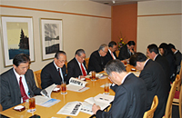
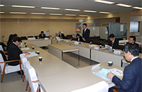
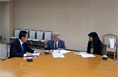

埼玉県議会5政党・会派と懇談しました
12月2日から17日の間、埼玉県議会の5政党・会派との懇談会をそれぞれおこないました。埼玉県生協連から今年度の県生協連の活動取り組みや事業状況と消費者課題について説明し、意見交換しました。（開催順に報告を掲載しています）
公明党議員団との懇談会
埼玉県議会公明党議員団
- 日時：
- 12月2日（月）16:25～17:00
- 会場：
- 埼玉県県議会会議室
- 出席：
- 西山淳次団長、石渡 豊副団長、蒲生徳明幹事長、塩野正行政調会長、萩原一寿議員、安藤友貴議員、福永信之議員、藤林富美雄議員
- 県連：
- 岩岡宏保会長理事、滝澤玲子常務理事
自由民主党県議団役員の皆様との懇談

自由民主党県議団
- 日時：
- 12月6日（金）17:00～19:15
- 会場：
- 浦和ロイヤルパインズホテル
- 出席：
- 樋口邦利団長、島田正一副団長、荒川岩雄副団長、鈴木聖二幹事長、鈴木 弘総務会長、本木 茂政調会長
- 県連：
- 岩岡宏保会長理事、滝澤玲子常務理事、亀山裕二常務理事、吉川尚彦常務理事
民主党・無所属の会議員団との懇談会

民主党・無所属の会
- 日時：
- 12月10日（木）16:15～17:05
- 会場：
- 埼玉県県議会会議室
- 出席：
- 吉田芳朝代表、浅野目義英代表代行、山川百合子副代表、木村 勇夫幹事長、田並尚明総務会長、高木真理政調会長、菅 克己議員、井上将勝議員、畠山 稔議員、水村篤弘議員、中川 浩議員、山本正乃議員
- 県連：
- 岩岡宏保会長理事、滝澤玲子常務理事、亀山裕二常務理事
社会民主党県議との懇談会

社会民主党
- 日時：
- 12月16日（月）14:00～14:45
- 会場：
- 埼玉県県議会会議室
- 出席：
- 社会民主党 佐藤征治郎議員
- 県連：
- 岩岡宏保会長理事、滝澤玲子常務理事
共産党県議団との懇談会

日本共産党埼玉県議会議員団
- 日時：
- 12月17日（火）10:35～11:30
- 会場：
- 埼玉県県議会会議室
- 出席：
- 柳下礼子団長、村岡正嗣議員
- 県連：
- 岩岡宏保会長理事、滝澤玲子常務理事
埼玉県生協連の活動報告と懇談の内容
県議会各政党・会派との懇談では、県生協連の活動の取り組みを紹介し、懇談しました。
≪県生協連の取り組み紹介≫
岩岡会長理事より、この間の県生協連、会員生協の取り組みを紹介しました。
- 第28回埼玉県原爆死没者慰霊式、福島の子ども保養プロジェクト、第49回埼玉県消費者大会、彩の国食と農林業ドリームフェスタ、2013さよなら原発埼玉県民集会等
≪懇談した内容≫
- 食の安全確保・食品表示、福島子ども保養プロジェクト、震災支援活動、防災、再生エネルギー、消費者被害・相談体制、消費者被害回復のための新しい訴訟制度、地産地消、消費者大会、ネット事業、介護事業、リサイクル、原爆死没者慰霊式など、多岐にわたって意見を交換しました。